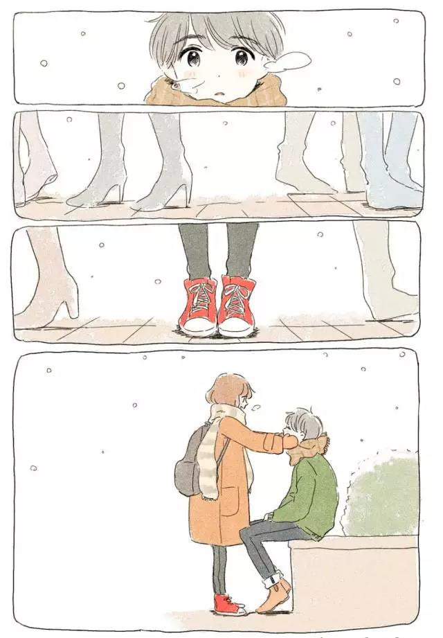

最好的样子
两个人在一起，最重要的感觉就是舒服。即使默默不语，也是一种默契；纵然两两相望，也是一种欣喜。
距离，让思念生出美丽；不求轰轰烈烈，只求简单温暖，不离不弃。

只要在一起
不管做什么或什么都不做
不管说什么或什么都不说
都很开心满足，从不会觉得尴尬
纵然风景百般美妙,在他心中，世间也始终你好
不会担心害怕
因为你知道别人抢不走他
就像他知道你不会被别人抢走一样
不会将就自己
也不用刻意讨好迎合对方
在这段感情里
两个人都能做最真实和最舒服的自己
相遇出于缘分
相恋出于爱情
I love you
I love you
I love you
I love you
I love you
I love you
I love you
I love you
I love you
I love you
明白对方不是最好的
也知晓他的种种缺点
却就此认定了这个人
想和她一直一直幸福的走下起
从年少轻狂到白发苍苍